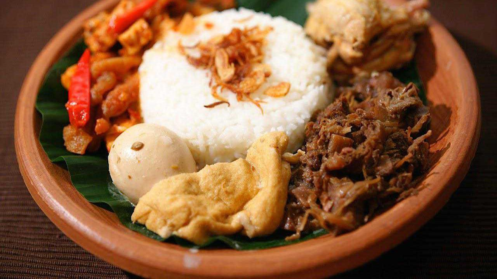

Gudeg terbuat dari nangka muda yang dimasak
santan punya cita rasa manis bercampur
gurih yang khas. Sajian ini paling enak
jika dinikmati dengan nasi hangat dan sambal
krecek yang pedas.
Untuk menikmati perpaduan nangka muda serta
bumbu gula kelapa dan aneka rempah yang nikmat
ini, kamu bisa memasaknya sendiri di rumah.
Made By C6 Team.